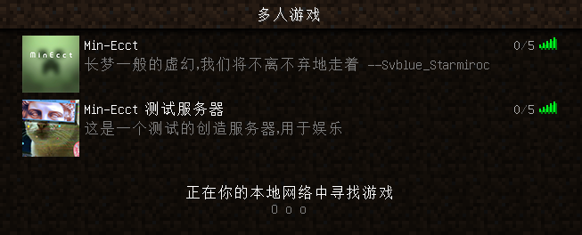

其实这篇文章只不过是我个人闲时无聊写的东西。——Vikon_i
以前和大家一起玩 mc 的时候，总因为没有个稳定的联机方式而不了了之，试过所谓的 “ 蛤蟆吃 ” ，用过端口映射，但总因为各种奇奇怪怪的问题而选择了放弃，后来不知道从哪里了解到了 TeamViewer ，才算是稍微解决了一下联机的问题。
但当时的 Minecraft 版本一直都有个 bug，那就是单人模式下对局域网开放后，进来的新玩家皮肤是不会显示的 ( 国际版正版 )，对于这个，我还在 McBBS 里发帖问过这到底是怎么一回事，得到的答复大家也都能在帖子里看到，总之，Minecraft 这个游戏的 bug 还是挺多的，过了这么多个大版本都没有修复，我也就不盼望 mojang 能怎么怎么样了，不过幸好我听说这次 1.13 版本的代码是从新写过的，然后这个 bug 也正好在这个版本消失了，也算是一件好事吧。
后来因为一件事，我们大家都完全放弃掉了 TeamViewer，也不能说是放弃了 TeamViewer，就是不怎么用了，好像是因为联机连不上了，延迟什么的暂且不提，输入好了 ip 和端口后进入服务器，界面会一直卡在 “ 加载地图 ” 中。大家选择了使用 Minecraft 自带的领域服联机，虽然延迟大，但至少能玩，不过那种时光没有持续多久就是了。
之前我也在我自己的博客里提到了，阿里云有个活动，学生 100 多块钱能买个一年的主机，虽然性能不怎么样，大概就只能做个博客 Web 的主机，不过开个纯净的 Minecraft 5 人服务器应该还是可以的吧，在群里跟大家说了一声，然后就和 Rater_lc 一起花钱买了下来。
下好了服务端，上传，开启。就这样完成了。
虽然和之前想的一样，tp 一个区块没有加载的地方，人过去了，会卡好长一段时间，这个问题其实只需要升级一下宽带就能解决，毕竟 1M 宽带下载速度差不多也就 0.12M/s，一个人在服务器里也都够呛了，更何况 5 人？不过升级宽带……要花钱啊。想想还是忍忍算了，之前那个暑假不也是这么过来的吗。
另外之前在腾讯云买的一台服务器，本来只是想在腾讯云备案一个域名的，但发现备案域名之前还得买一个 3 个月及以上的服务器才能进行备案，于是就花钱买了。备案进行得很不顺利，在湖北备案需要提供 湖北省居住证，好像是一个这样的证明。总之，这个服务器也就被空下了，其宽带也是 1M 的，我想这个服务器留着也是浪费钱，不如用来干点什么，干什么好呢？貌似只有开 Minecraft 服务器了。于是就开了个创造模式的测试服。
差不多就这样：

总之，写了这么多，其实我想表达的也就一句话：这个寒假有东西玩了。
现在大家都步入了大学，每天能玩 Minecraft 的时间照理来说应该会比在高中的时候要多很多了吧，不过我们之中还有一位即将进入高三，那段时间他可能会消失一整年，还有一位暂且没有买电脑，所以也没法玩。虽然有过被邀请去玩手机版 Minecraft，也就是网易代理的 “ 国服 ”，但一想到那让人不禁说出不文明词汇的操作手感，所以还是算了。其实 Minecraft PE 版本我和 Svblue_Starmiroc 一直都不怎么喜欢。
Min-Ecct 虽然是以 Minecraft 为主题创建的，但平常玩的游戏其实不仅限于 Minecraft，只要是能多人联机的游戏就邀在一起玩的我们，也一路走过了近 4 年的时光。希望以后，也能 “ 不离不弃地走着 ”。
Min-Ecct 勿忘初衷